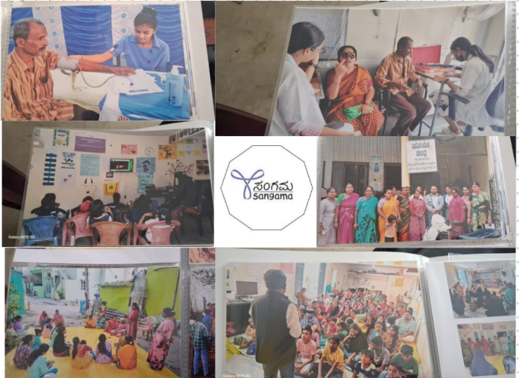
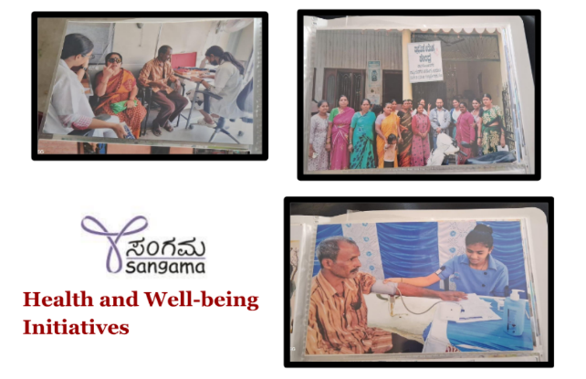
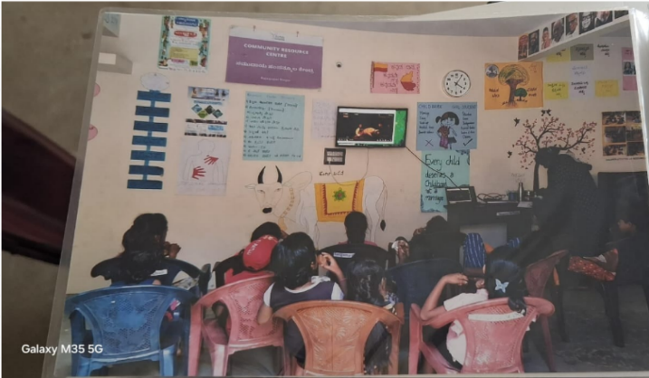
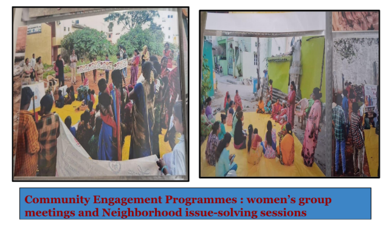

Standing With Stories - First Day Reflections at SANGAMA

Today was the fourth day of our field immersion journey, and we visited a new organization—Sangama—that works in North Bengaluru. This organization focuses on marginalized communities, especially migrants and informal workers, and supports them through healthcare access, civic rights, and entitlements.
We began our visit by understanding the areas and Community Resource Centers (CRCs) that Sangama supports. Two CRCs were introduced to us:
- Rajagopal CRC
- Heganahalli CRC
These CRCs act as anchors for community interaction, addressing local civic issues, conducting health programs, and enabling people to access various government schemes and welfare services.
We visited areas like Sathi Circle and Ambedkar Sanghat Nagar, which are around 20 to 60 years old, with settlements that are dense but not officially declared as slums—a legal gap that directly affects infrastructure and recognition. We interacted with community organizers, observed the environment, and gained first hand insights into how these communities function and struggle especially when not officially declared as slums.
Community
The areas we visited host a population of approximately 3000 people living in 970+ households. These communities are largely composed of:
- Migrant families from states such as Andhra Pradesh, Odisha, and northern India
- Primarily Hindu families, with a few Muslim households (around 3)
- Residents from caste groups including SC, ST, and OBC
- Languages spoken: Kannada (most common), Hindi, Telugu, Oriya.
The settlements are between 20 to 60 years old, with single storey housing and densely packed layouts. While some families in Sathi Circle have been provided land pattas, the area is still not recognized as a formal slum by the government. This lack of official recognition leaves residents ineligible for many urban development programs, despite decades of settlement.
Health and Well being Initiatives
One of the critical roles Sangama plays is organizing health focused outreach for communities that lack nearby clinics or hospitals. During our visit, we learned about the following ongoing and past initiatives:

- Monthly health camps providing check ups for blood pressure, sugar levels, and other basic health markers
- Eye care camps, often followed by distribution of free spectacles
- A summer camp (ages 11-16) that integrates sports and wellness activities
- A referral system that directs complex health cases to external hospitals and NGOs for support
These programs are vital because many residents lack documentation needed for public hospitals or health insurance schemes, making even minor ailments difficult to address.
Education
Sangama's efforts extend into the areas of education, entitlements, and welfare schemes. Some key observations from our visit include:

- Government and aided schools in the area serve students from Classes 1st class to 10th Class, with higher education students attending Malleswaram Government College
- Mid-day meals are provided to approximately 150 school children as part of a government nutrition scheme
Entitlements
Many families struggle with access to:
- Pension schemes
- Ration cards
- Aadhaar linking
- Housing and tenancy documents
Without formal land titles and slum recognition, applying for these programs becomes harder. Sangama assists residents in completing applications, tracking status, and referring to appropriate government offices when needed.
Civic Engagement & Leadership
The Ambi Circle, Community Resource Center, led by Kalpana Ma'am, is a critical hub for community mobilization. Sangama conducts several civic and community programs, including:

- Monthly Mahila Mandal meetings, a platform for women to discuss health, education, sanitation, and safety
-
Neighborhood issue solving sessions, covering:
- Garbage mismanagement
- Drainage blockages
- Broken water pipelines
- Streetlight maintenance
The CRC model creates safe spaces for dialogue and helps build community solidarity, especially among women and elders.
Cultural Observations
- Hoora Habba, a local festival, is celebrated by many residents
- Despite challenges, the area reflects strong cultural cohesion and identity
- Religious harmony is present, with Hindus and Muslims living peacefully side by side
Reflection
Visiting Sangama Foundation opened my eyes to how legal invisibility affects everyday life. Even though people have been living in these areas for decades, the absence of official recognition turns basic needs into lifelong struggles.
What impressed me most was the integrity and persistence of the small team (just 2 Community Organizers for the entire area!) who navigate these complexities every day. Through camps, referrals, and monthly meetings, Sangama provides more than services, they offer presence, dignity, and pathways to justice.
This community may not exist on official maps, but it exists and thrives in lived experience. Organizations like Sangama remind us that even when systems fall short, solidarity can still rise.
Note: All photos included in this post were taken with the informed consent of the community members and Community Organisers (COs). We deeply respect their dignity, stories, and trust, and thank them for allowing us to document their environment and experiences.